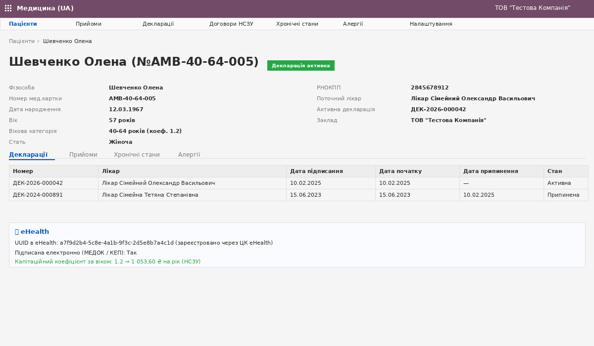
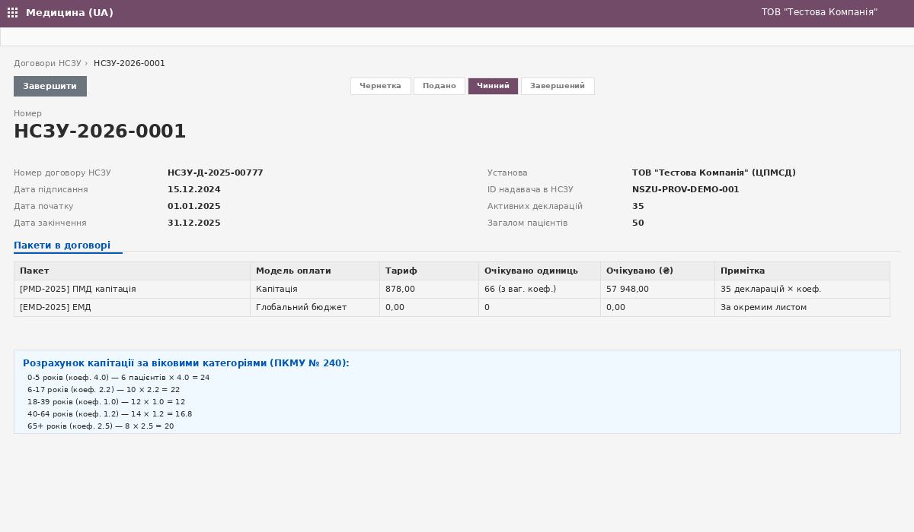

Пацієнти, декларації з лікарем, НСЗУ-капітація, клінічна картка і інтеграція з eHealth — все для роботи в реформованій системі охорони здоров'я.


Капітаційний платіж НСЗУ розраховується автоматично:
тариф × Σ(пацієнтів × ваговий коефіцієнт за віком)
за Постановою КМУ № 240. Декларації при активації реєструються
в eHealth (dry-run або реальний API).
Первинна медико-санітарна допомога. Декларації + капітація НСЗУ.
Спеціалізована амбулаторна допомога за пакетами НСЗУ.
Стаціонарна допомога. Облік пацієнтів, випадків, виконання договору.
Станції екстреної медичної допомоги. Глобальний бюджет НСЗУ.
Пацієнт обирає лікаря ПМД, декларація автоматично реєструється в eHealth (через dry-run або реальний API).
НСЗУ-договір автоматично перераховує очікувану суму:
тариф × Σ(пацієнти × коеф. за віком)
Лікар приймає пацієнта → encounter з діагнозом МКХ-10 і призначенням лікування.